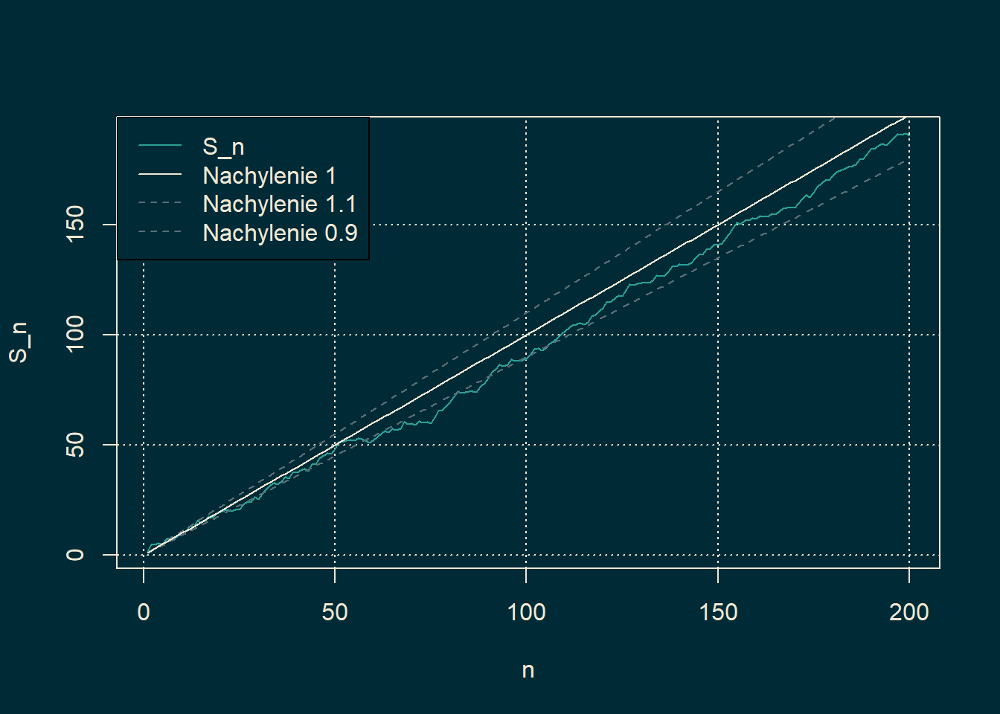

23 Twierdzenie de Moivre’a-Laplace’a
Z MPWL wielkich liczb wynika, że jeżeli zmienne \(\{X_k\}_{k\in \mathbb{N}}\) są niezależne i mają ten sam rozkład, to dla \(S_n = \sum_{k=1}^nX_k\) zachodzi \(S_n/n \to \mathbb{E} [X]\) p.n. Chcemy teraz zrozumieć jak szybka jest ta zbieżność. Zauważmy, że powyższe mówi, że z prawdopodobieństwem jeden, dla każdego \(\epsilon>0\), \[\begin{equation*} n(\mathbb{E}[X_1] -\epsilon ) \leq S_n \leq n(\mathbb{E}[X_1] +\epsilon). \end{equation*}\] Czyli wykres ciągu \(\{S_n\}_{n \in \mathbb{N}}\) od pewnego miejsca będzie znajdował się między prostymi o nachyleniach \(\mathbb{E}[X_1] \pm \epsilon\).
Przykład 23.1 Jeżeli \(X_j\) mają rozkład jednostajny na przedziale \([-1,3]\), to \(\mathbb{E}[X_j]=1\). Zatem dla dostatecznie dużego \(n\), \[\begin{equation*} 0.9 n \leq S_n \leq 1.1n. \end{equation*}\]
# Ustawienie liczby obserwacji
n_vals <- 1:200
# Spacer losowy o średniej 1 (np. suma zmiennych U(0.5, 1.5))
#set.seed(123) # dla powtarzalności
steps <- runif(length(n_vals), min = -1, max = 3)
walk <- cumsum(steps)
# Proste referencyjne
line_1.1 <- 1.1 * n_vals
line_0.9 <- 0.9 * n_vals
# Ustawienia kolorystyczne (Solarized)
bg_color <- "#002b36"
fg_color <- "#eee8d5"
primary_color <- "#2aa198"
ref_line_color <- "#586e75"
par(bg = bg_color)
# Rysowanie wykresu
plot(n_vals, walk,
type = "l",
col = primary_color,
xlab = "n",
ylab = "S_n",
col.lab = fg_color,
col.main = fg_color,
col.axis = fg_color,
fg = fg_color,
panel.first = grid(col = fg_color))
# Dodanie prostych o nachyleniu 1.1 i 0.9
lines(n_vals, line_1.1, col = ref_line_color, lty = 2)
lines(n_vals, line_0.9, col = ref_line_color, lty = 2)
lines(n_vals, n_vals, col = fg_color, lty = 1)
# Dodanie legendy
legend("topleft", legend = c("S_n", "Nachylenie 1", "Nachylenie 1.1", "Nachylenie 0.9"),
col = c(primary_color, fg_color, ref_line_color, ref_line_color),
lty = c(1, 1, 2, 2), text.col = fg_color, bg = bg_color) Na symulacji widzimy, że \(S_n\) oscyluje wokół prostej o nachyleniu \(1 =\mathbb{E}[X_1]\).
Przesuwając zmienne losowe, tzn. przyjmując \(X' = X - \mathbb{E} [X]\), możemy założyć, że \(\mathbb{E} X = 0\), a więc \(S_n/n \to 0\). Oznacza to w szczególności, że \(|S_n| \le \varepsilon n\) od pewnego miejsca dla każdego \(\varepsilon>0\). Chcielibyśmy lepiej zrozumieć zachowanie \(S_n\) i opisać dokładniej strukturę tego ciągu. Interesują nas podstawowe pytania. Jak szybko ciąg \(S_n/n\) zbiega do zera, tzn. jak należy znormalizować \(S_n\), aby otrzymać nietrywialną granicę? Jaka jest typowa odległość \(S_n\) od zera? Na to ostatnie pytanie już teraz możemy odpowiedzieć już teraz. Obliczenie \(\mathbb{E} |S_n|\) jest kłopotliwe, ale policzmy drugi moment: \[ \mathbb{E} [S_n^2] = \mathbb{V}ar [S_n] = n \mathbb{V}ar X_1 = n\mathbb{E} \left[X_1^2\right], \] a więc \(S_n^2\approx n\), czyli właściwą normalizacją jest \(|S_n|\approx \sqrt n\). Powstaje więc kolejne pytanie. Czy ciąg \(S_n/\sqrt n\) ma jakąś strukturę, którą można opisać.
Rozważmy najprostszą możliwą sytuację. Naszym celem będzie teraz udowodnienie szczególnej wersji centralnego twierdzenia granicznego (CTG) dla niezależnych zmiennych losowych \(\{X_n\}\) o rozkładzie \(X_n = \pm 1\) z em \(1/2\). Po łatwym przesunięciu (\(Y_n = 2 X_n - 1\)) twierdzenie pozwala analizować liczbę orłów w wielokrotnym rzucie monetą. Oznaczmy przez \(S_n = X_1+\ldots + X_n\).
Przypomnijmy doświadczenie z deską Galtona
Pokazuje ono, że każdym razem histogramy otrzymanych wyników układają się w krzywą Gaussa. Badany model jest stosunkowo łatwy. Przy pomocy wzorów kombinatorycznych potrafimy obliczyć \(\mathbb{P}[S_n = k]\); przypomnijmy, że \((S_n+n)/2\) ma rozkład \({\rm Bin}(n,1/2)\).
Chcemy więc pokazać, że przy odpowiedniej normalizacji prawdopodobieństwa te będą zbiegać do funkcji Gaussa. Jest to treścią poniższego twierdzenia, pochodzącego z pierwszej połowy XVIII wieku:
Twierdzenie 23.1 (de Moivre'a - Laplace'a) Niech \(\{X_n\}_{n \in \mathbb{N}}\) będzie ciągiem niezależnych zmiennych losowych takich, że \(\mathbb{P}[X_1=1] = \mathbb{P}[X_1 = -1] = 1/2\) i niech \(S_n = X_1+\ldots + X_n\). Wówczas dla dowolnych \(a<b\) \[ \lim_{n \to \infty}\mathbb{P}\bigg[ a\le \frac{S_n}{\sqrt n} \le b \bigg] = \frac 1{\sqrt{2\pi}}\int_a^b e^{-\frac{x^2}2}\mathrm{d}x. \]

Abraham de Moivre

Pierre-Simon Laplace
Proof. Przedstawiony poniżej dowód nie jest w pełni precyzyjny i zawiera drobne luki (przejścia graniczne wymagają dokładniejszej wersji wzoru Stirlinga i dokładniejszych szacowań). Pokazuje jednak istotę dowodu, a pozostałe do uzupełnienia dosyć techniczne szczegóły można znaleźć w literaturze.
Zacznijmy od oczywistej obserwacji, że w parzystych krokach spacer losowy \(S_n\) jest w parzystych punktach. Należy więc rozpatrzyć dwa podciągi po \(n\) parzystych oraz nieparzystych i pokazać, że obie granice są identyczne. Załóżmy \(n=2m\), wtedy dla liczb nieparzystych mamy \[ \mathbb{P}[S_{2m} = 2k+1]=0. \] Chcemy więc oszacować wartość \[\begin{equation*}%\label{eq:ma1} \mathbb{P}\bigg[ a\le \frac{S_{2m}}{\sqrt{2m}} \le b \bigg] = \sum_{x\in[a,b]\cap \frac{2\mathbb{Z}}{\sqrt{2m}}} \mathbb{P}\big[ S_{2m} = x\sqrt{2m} \big], \end{equation*}\] gdzie w powyższej sumie \(x\) jest postaci \(x = \frac{2k}{\sqrt{2m}}\) i ponadto \(k\) spełniają \(|k|\le m\). Powinniśmy zatem opisać asymptotyczne zachowanie wyrażeń \[ \mathbb{P}\big[ S_{2m} = 2k \big], \] gdy \(2k = x\sqrt{2m}\), \(x\) jest ustalone, a \(m\) zbiega do \(\infty\)
W dowodzie będziemy korzystać z formuły Stirlinga: \[ n! \sim \sqrt{2\pi n} \cdot \frac{n^n}{e^n}, \quad n\to\infty. \]
Dla liczb parzystych postaci \(2k\) i \(|k|\le m\), proces \(S_{2m}\) znajduje się w punkcie \(2k\), gdy w \(2m\) próbach wylosowano dokładnie \(m+k\) jedynek. Zatem korzystając z definicji rozkładu dwumianowego \[\begin{align*} \mathbb{P}[S_{2m}=2k] & = {2m \choose m+k} \frac 1{2^{2m}} = \frac{(2m)!}{(m+k)! (m-k)! 2^{2m}}\\ &\overset{{\rm \small Stirling}}{\sim} \frac{e^{m+k}e^{m-k}}{e^{2m}}\frac{(2m)^{2m}}{(m+k)^{m+k}(m-k)^{m-k}}\cdot \frac{\sqrt{ 4\pi m}}{\sqrt{2\pi(m+k)}\sqrt{2\pi (m-k)}}\cdot \frac 1{2^{2m}}\\ &= \bigg(\frac {m}{m+k}\bigg)^{m+k}\bigg( \frac{m}{m-k}\bigg)^{m-k} \cdot \sqrt{\frac{m}{(m+k)(m-k)}} \cdot \frac 1{\sqrt \pi}\\ & = \bigg( 1+\frac km \bigg)^{-(m+k)}\bigg( 1-\frac km \bigg)^{-(m-k)} \cdot \frac 1{\sqrt{\pi m}}\cdot \frac{1}{\sqrt{1+\frac km}\sqrt{1-\frac km}}\\ & = \bigg( 1-\frac {k^2}{m^2} \bigg)^{-m}\bigg( 1+\frac km \bigg)^{-k} \bigg( 1-\frac {k}{m} \bigg)^k \cdot \frac 1{\sqrt{\pi m}}\cdot \frac{1}{\sqrt{1+\frac km}\sqrt{1-\frac km}}\\ \end{align*}\] Przypomnijmy, że interesuje nas sytuacja, gdy \(x\in \mathbb{R}\) jest ustalone oraz \(\frac{k^2}{m} = \frac{x^2}{2}\). Wówczas, gdy \(m\) zbiega do \(\infty\) (a więc również \(k \to\infty\)), z własności liczby \(e\) otrzymujemy \[\begin{align*} \bigg( 1-\frac {k^2}{m^2} \bigg)^{-m} &= \bigg( 1-\frac {k^2}{m^2} \bigg)^{- \frac {m^2}{k^2} \cdot \frac{x^2}2 } \to e^{\frac{x^2}{2}},\\ \bigg( 1+\frac km \bigg)^{-k} &= \bigg( 1+\frac km \bigg)^{-\frac mk \cdot \frac{x^2}{2}} \to e^{-\frac{x^2}2},\\ \bigg( 1-\frac {k}{m} \bigg)^k&\to e^{-\frac{x^2}{2}}. \end{align*}\] Stąd wynika \[\mathbb{P}[S_{2m} = 2k] \sim e^{-x^2/2}\cdot \frac 1 {\sqrt{\pi m}}.\] Dalej \[\begin{multline*} \mathbb{P}\bigg[ a\le \frac{S_{2m}}{\sqrt{2m}} \le b \bigg] = \sum_{x\in[a,b]\cap \frac{2\mathbb{Z}}{\sqrt{2m}}} \mathbb{P}\big[ S_{2m} = x\sqrt{2m} \big] \\ \sim \sum_{x\in[a,b]\cap \frac{2\mathbb{Z}}{\sqrt{2m}}} \frac 1{\sqrt{2\pi}} \sqrt{\frac 2m} e^{-x^2/2} \sim \int_a^b \frac 1{\sqrt{2\pi}} e^{-x^2/2}dx, \end{multline*}\] gdzie ostatnia implikacja wynika z definicji całki Riemanna.
Przykład 23.2 Jakie jest prawdopodobieństwo, że w 100 rzutach kostką otrzymamy co najmniej 60 orłów? Sformułujmy to zadanie w terminach zmiennych losowych, które były używane w powyższym twierdzeniu. Niech \(X_i = 1\), gdy wyrzucono w \(i\)-tym rzucie orła i \(X_i=-1\) w przeciwnym razie. Oznaczmy przez \(S_n = X_1+\ldots+X_n\). Wówczas 60 orłów i 40 reszek daje \(S_{100} = 20\). Z powyższego twierdzenia mamy więc \[ \mathbb{P}[S_{100}\ge 20] = \mathbb{P}[S_{100}/10 \ge 2] \approx 1- \mathbb{P}hi(2) \approx 0,02. \] Analogicznie można obliczyć o wyrzucenia co najmniej 540 orłów w 1000 rzutach: \[ \mathbb{P}[S_{1000}\ge 80] \approx 0,006. \]
Twierdzenie 23.2 Niech \(S_n\) będzie liczbą sukcesów w \(n\) próbach przy ie sukcesu \(p\) (\(S_n\sim {\rm Bin}(n,p)\)). Wówczas \[ \lim_{n \to \infty}\mathbb{P}\bigg(a \leq \frac{S_n-np}{\sqrt{n pq}} \leq b \bigg) \to \frac{1}{\sqrt{2\pi}} \int_a^b e^{-s^2/2}\mathrm{d}s. \]
Przypomnijmy, że \(\mathbb{E} S_n = np\), a \(\mathbb{V}ar S_n = npq\). Więc powyższy wynik można zapisać w postaci \[ \lim_{n \to \infty}\mathbb{P}\bigg(a \leq \frac{S_n-\mathbb{E}[S_n]}{\sqrt{\mathbb{V}ar[S_n]}} \leq b \bigg) \to \frac{1}{\sqrt{2\pi}} \int_a^b e^{-s^2/2}\mathrm{d}s. \] Podczas kolejnych wykładów pokażemy, że analogiczny wynik zachodzi w znacznie większej ogólności.